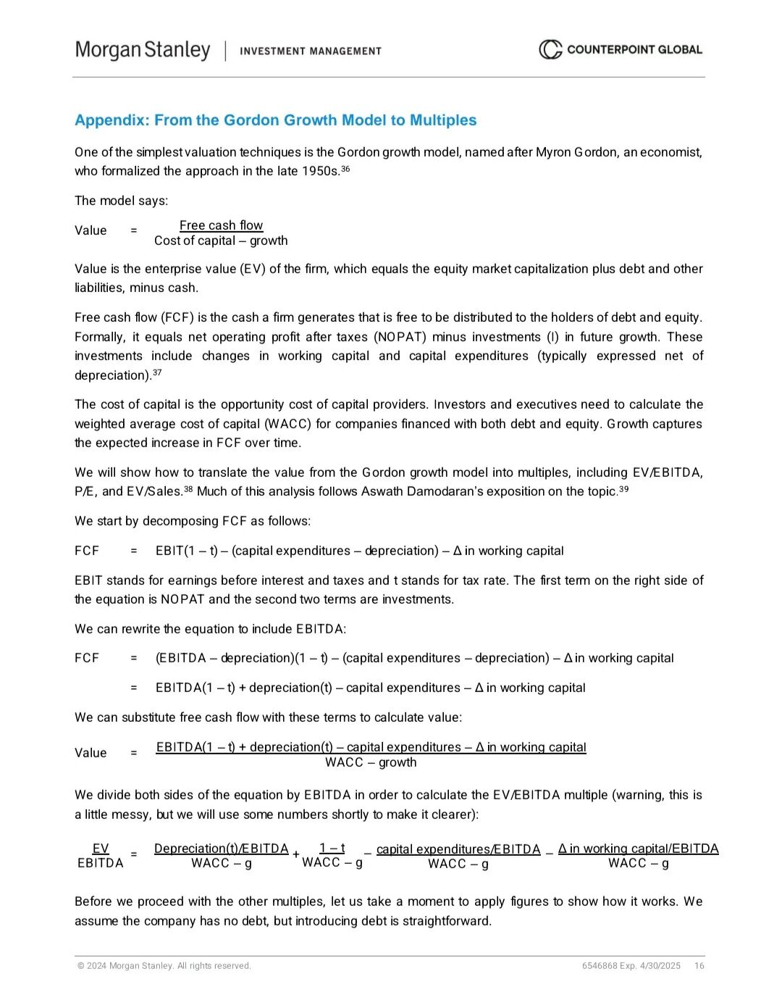
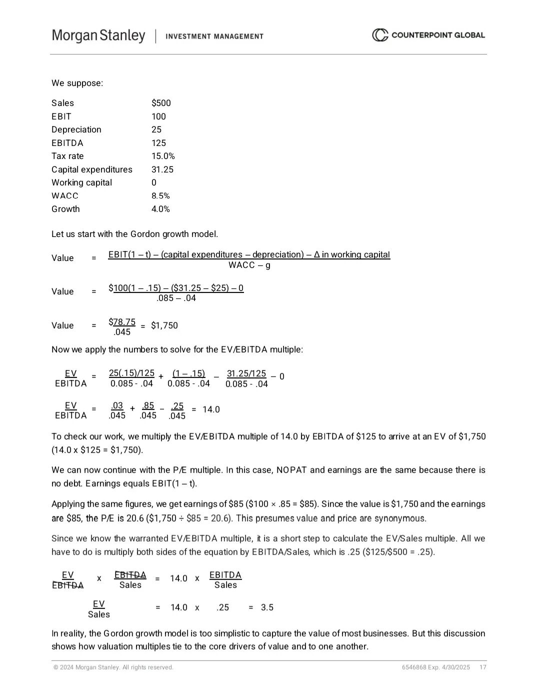

本次推导的核心逻辑是：从永续增长的企业自由现金流（FCFF）模型出发，推导出EV/EBITDA、P/E等估值倍数，证明相对倍数本质是基本面指标的简化表达。
一、基础假设与核心公式
1. 戈登增长模型（永续FCFF模型）
企业价值（EV）是未来永续自由现金流的现值，公式为：
企业价值（EV）= 下一期企业自由现金流（FCFF1）÷（加权平均资本成本（WACC）- 企业永续增长率（g））
其中：
- 下一期企业自由现金流（FCFF1）：指企业未来第一期产生的自由现金流
- 加权平均资本成本（WACC）：企业综合融资成本，反映整体风险水平
- 企业永续增长率（g）：企业长期稳定增长的速率
2. 企业自由现金流（FCFF）的计算公式
FCFF与EBITDA的关联公式（剔除非现金、融资相关项）：
企业自由现金流（FCFF）= EBITDA ×（1 - 企业所得税率（t））- 资本支出（CapEx）- 净营运资本变动（ΔNWC）+ 折旧与摊销（DA）× 企业所得税率（t）
其中：
- 企业所得税率（t）：企业适用的法定或有效所得税率
- 资本支出（CapEx）：企业为维持或扩张产能发生的长期资产投资
- 净营运资本变动（ΔNWC）：当期净营运资本与上期的差额（流动资产 - 流动负债）
- 折旧与摊销（DA）：非现金支出，反映固定资产、无形资产的损耗
3. 关键简化假设（为推导估值倍数）
永续增长阶段，企业资本支出与折旧摊销匹配（维持性资本支出），且净营运资本变动为0，即：
- 资本支出（CapEx）= 折旧与摊销（DA）（维持现有产能，无扩张性资本支出）
- 净营运资本变动（ΔNWC）= 0（营运资本规模稳定，无额外资金占用或释放）
二、第一步：推导EV/EBITDA倍数
1. 将简化假设代入FCFF公式
企业自由现金流（FCFF）= EBITDA ×（1 - 企业所得税率（t））- 折旧与摊销（DA）+ 折旧与摊销（DA）× 企业所得税率（t）
整理后：
企业自由现金流（FCFF）= EBITDA ×（1 - 企业所得税率（t））- 折旧与摊销（DA）×（1 - 企业所得税率（t））=（EBITDA - 折旧与摊销（DA））×（1 - 企业所得税率（t））= EBIT ×（1 - 企业所得税率（t））
补充：EBIT = EBITDA - 折旧与摊销（DA）（息税前利润=息税折旧摊销前利润-折旧摊销），此步骤也验证了永续阶段FCFF等于税后EBIT。
2. 结合戈登增长模型，代入FCFF
企业价值（EV）= EBIT ×（1 - 企业所得税率（t））÷（加权平均资本成本（WACC）- 企业永续增长率（g））
又因为 EBIT = EBITDA - 折旧与摊销（DA），引入折旧因子（k）= 折旧与摊销（DA）÷ EBITDA（折旧占EBITDA的比例，取值在0到1之间），则：
- 折旧与摊销（DA）= 折旧因子（k）× EBITDA
- EBIT = EBITDA ×（1 - 折旧因子（k））
3. 代入EV公式并整理
企业价值（EV）= EBITDA ×（1 - 折旧因子（k））×（1 - 企业所得税率（t））÷（加权平均资本成本（WACC）- 企业永续增长率（g））
等式两边同时除以EBITDA，得到 EV/EBITDA倍数公式：
EV/EBITDA =（1 - 折旧因子（k））×（1 - 企业所得税率（t））÷（加权平均资本成本（WACC）- 企业永续增长率（g））
4. 结论：EV/EBITDA的驱动因素
该倍数由4个基本面指标决定：
- 折旧因子（k）：与资产结构相关（有形资产密集型企业k更高）
- 企业所得税率（t）：直接影响税后收益规模
- 加权平均资本成本（WACC）：与企业风险正相关（风险越高，WACC越高）
- 企业永续增长率（g）：反映企业长期增长潜力
三、第二步：推导P/E倍数
P/E倍数的核心是权益价值（Equity Value）与归属于股东的净利润（Net Income）的比值，需从企业价值过渡到权益价值。
1. 权益价值与企业价值的关系（净负债调整）
权益价值（Equity Value）= 企业价值（EV）- 有息债务（D）+ 现金及等价物（Cash）
其中：
- 有息债务（D）：企业需支付利息的债务（如银行贷款、公司债）
- 现金及等价物（Cash）：企业持有的流动性极强的资产（如现金、活期存款）
简化假设：无杠杆企业（有息债务D=0）且现金为0（现金及等价物Cash=0），则 权益价值（Equity Value）= 企业价值（EV）
2. 净利润（Net Income）与EBIT的关系
无杠杆企业无利息支出，净利润公式为：
净利润（Net Income）= EBIT ×（1 - 企业所得税率（t））
3. 结合戈登增长模型推导P/E
由戈登模型，权益价值（无杠杆）为：
权益价值（Equity Value）= EBIT ×（1 - 企业所得税率（t））÷（加权平均资本成本（WACC）- 企业永续增长率（g））
代入净利润公式，可得：
权益价值（Equity Value）= 净利润（Net Income）÷（加权平均资本成本（WACC）- 企业永续增长率（g））
等式两边同时除以净利润（Net Income），得到 P/E倍数公式：
P/E = 1 ÷（加权平均资本成本（WACC）- 企业永续增长率（g））
4. 有杠杆企业的P/E修正
若企业有杠杆（存在债务），需考虑利息税盾和财务风险，此时WACC会因债务成本降低，但权益风险提升（β系数上升），最终P/E公式扩展为：
P/E =（1 -（有息债务（D）÷ 权益价值（Equity Value））×（1 - 企业所得税率（t）））÷（权益资本成本（re）- 企业永续增长率（g））
其中：权益资本成本（re）= 股东要求的回报率（由CAPM模型计算，反映权益风险）
四、第三步：推导EV/销售额倍数
1. 引入销售净利率指标
定义 EBITDA利润率（m）= EBITDA ÷ 销售额（Sales），则 EBITDA = EBITDA利润率（m）× 销售额（Sales）
2. 代入EV/EBITDA公式推导
由EV/EBITDA公式：
企业价值（EV）= EBITDA ×（1 - 折旧因子（k））×（1 - 企业所得税率（t））÷（加权平均资本成本（WACC）- 企业永续增长率（g））
替换EBITDA为（EBITDA利润率（m）× 销售额（Sales）），可得：
企业价值（EV）= 销售额（Sales）× EBITDA利润率（m）×（1 - 折旧因子（k））×（1 - 企业所得税率（t））÷（加权平均资本成本（WACC）- 企业永续增长率（g））
等式两边同时除以销售额（Sales），得到 EV/销售额倍数公式：
EV/销售额 = EBITDA利润率（m）×（1 - 折旧因子（k））×（1 - 企业所得税率（t））÷（加权平均资本成本（WACC）- 企业永续增长率（g））
3. 结论：EV/销售额的驱动因素
除了折旧因子（k）、企业所得税率（t）、加权平均资本成本（WACC）、企业永续增长率（g）外，还新增了EBITDA利润率（m）（反映企业核心业务的盈利能力，越高说明单位收入创造的EBITDA越多）。
五、最终推导结论
所有估值倍数（EV/EBITDA、P/E、EV/销售额）均可以拆解为 企业基本面指标的函数，核心逻辑如下：
估值倍数 = f（盈利能力、资产结构、税率、风险水平、增长潜力）
这验证了报告的核心观点：估值倍数不是孤立的“定价工具”，而是企业自由现金流、资本成本、增长等基本面的简化体现。

